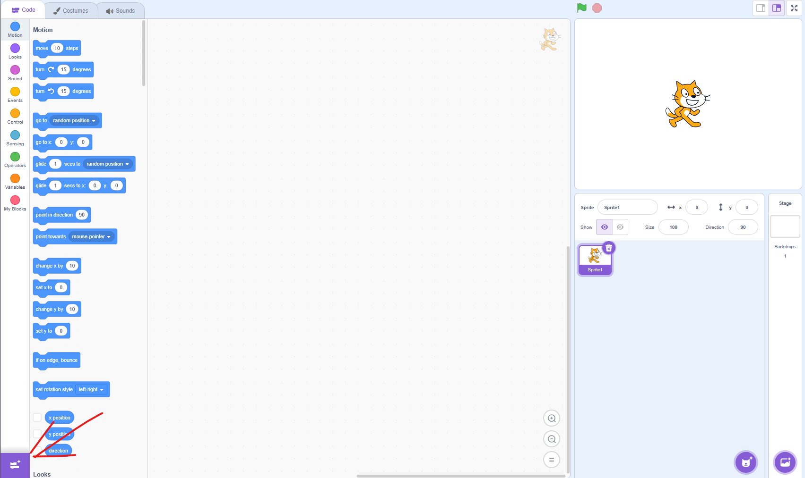
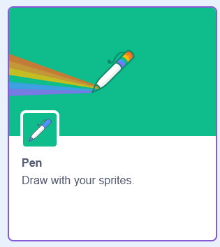

завдання на 25.03.25 Scratch алгоритм, що створює набір квадратів, розташованих один в одному. Опис алгоритму: Очистити поле Початкове положення: Спрайт переміщується в точку (-10, -10). Створення змінної NUM, якій присвоюється значення 20. Цикл повторення (поки NUM не стане більше 200): Опускає олівець (починає малювати). Повторити 4 рази (т.я. у квадрата 4 ребра) Перемістити на NUM крооків і поворот на 90гр. Піднімає олівець (припиняє малювання). Змінити колір олівця на 10 одниниць. Змінити NUM на 20 (Збільшує розмір квадрата) зсунути на х:-10 у:-10 (зміщує початкову точку, якщо координати збиті, то спробуйте інші варіації +-) Результат: Алгоритм малює концентричні квадрати, що збільшуються в розмірах і змінюють колір.